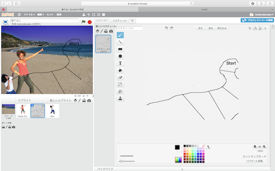
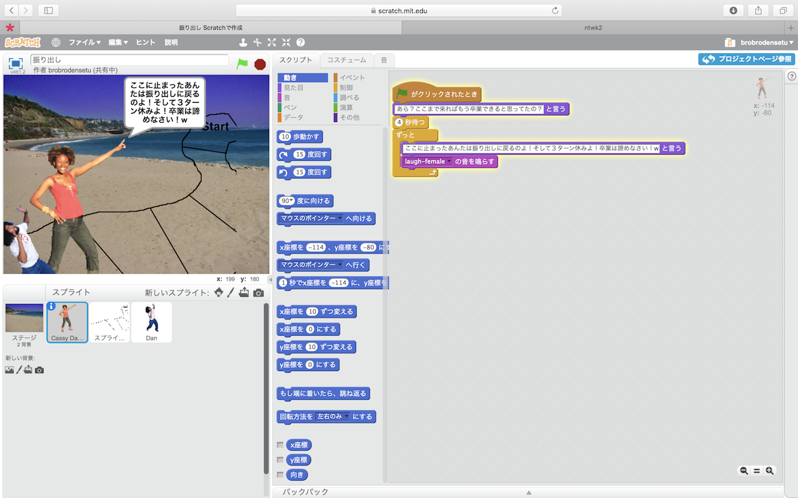
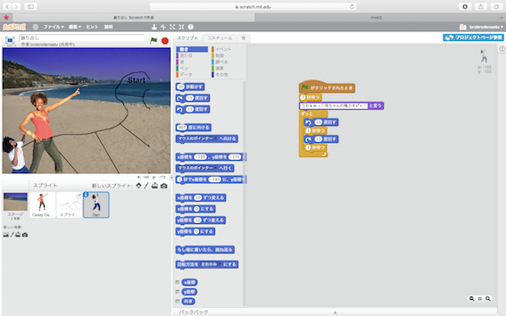
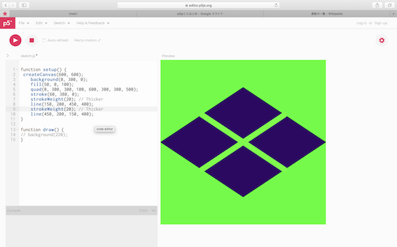
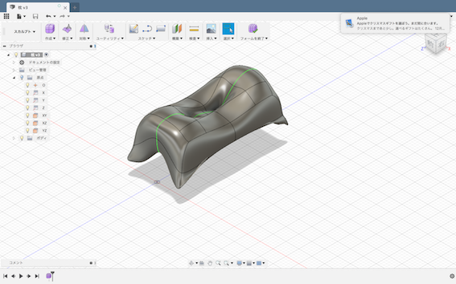

ソフトウェア・ネットワーク演習２
ソフトウェア・ネットワーク演習２
すごろくのイベントとして、Scratchを使って様々なギミックを取り入れた。
作ったイベント
このイベントの解説

背景は「beach malibu」を選択。

コスチュームとして、スゴロクのマップを模したものを作った。

１人目の登場人物「cassy dance-a」のスクリプトは
旗ボタンがクリックされた時に１つ目のセリフを出し
そこから4秒後にずっと２つ目のセリフ出しながら「laugh-female」の音を鳴らす。

２人目の登場人物「Dan」は、７秒後にセリフを言って、その後に左に１５度回し１秒待ち
次は右に１５度回し１秒待つ、これをずっと続ける。
感想
作品の演出上、何をどのように、特に、どのタイミングで動かすのかを計算しないといけない場面が
あったから難しかった。
作っていく中で、再生して思い通りにいかなかった時もあったので、その度に停止して見直したり
していたので大変だった。
p5jsを使って家紋をプログラミングした。

使い方を友達に教えてもらい、元の色をいじった。
backgroundで、背景を黄緑に変え、
fillでひし形の色を紺に変え、 strokeでひし形の上で交わっている2つの線の色をbackground
と同じ黄緑に変えた。
感想
全てが数字で表されているため、どこをどの数字に変えたら動くのか全く分からなかったので
打っては消すを繰り返しがあって大変だった。
・デジタルプロトタイピング
Fusionで、学校に設置したいものを作った。

今回作った学校の机で座ったまま寝れる枕
長方形の形を作り、左右対称でかつ全面を細かく分割し、
線と線の交わっている部分のポイントを引っ張ったり、押したりして、枕の柔らかい形を作って
いった。
感想
学校の休憩時間に寝たいのに、姿勢の問題上寝れないので、座っている状態でも眠れるような枕を
作ったが、実物を使ってみないと分からないなと思った。デザインとしては結構気に入っている。